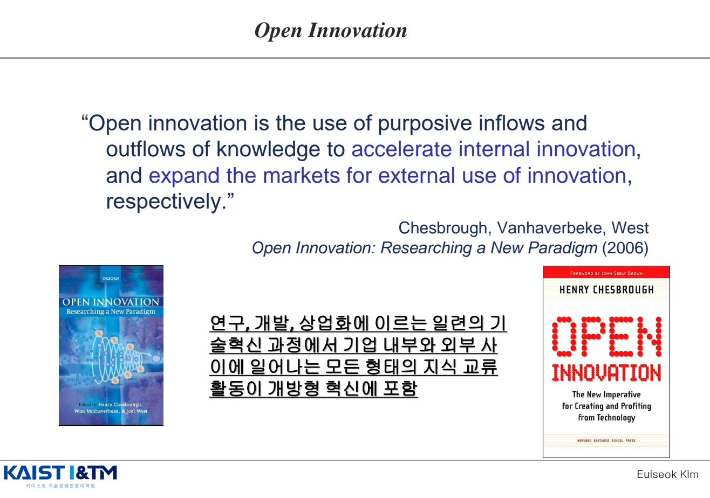
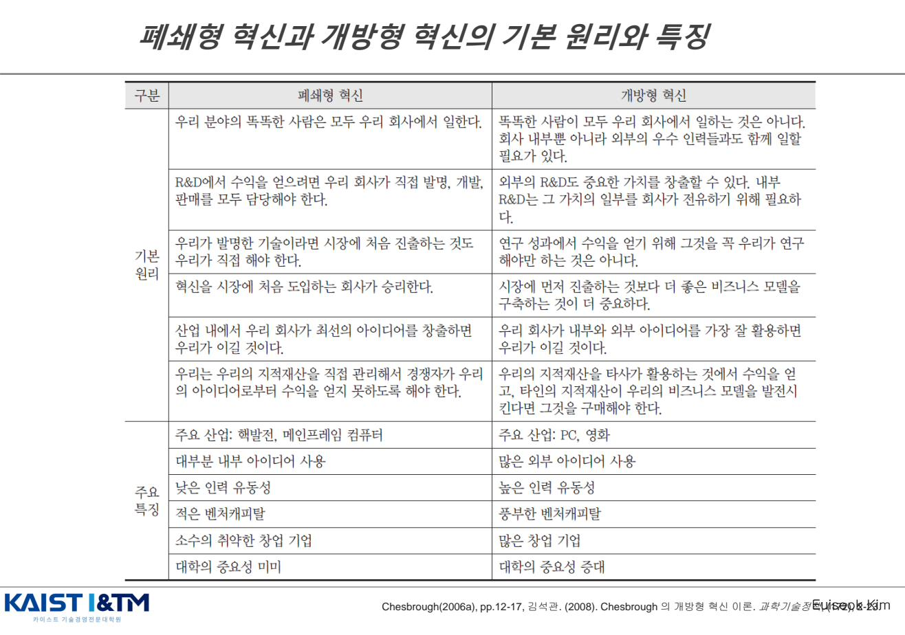
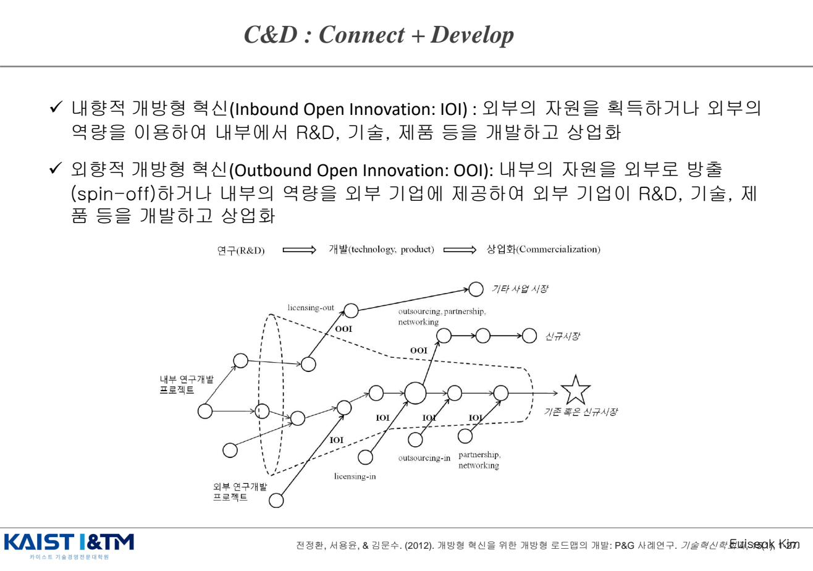
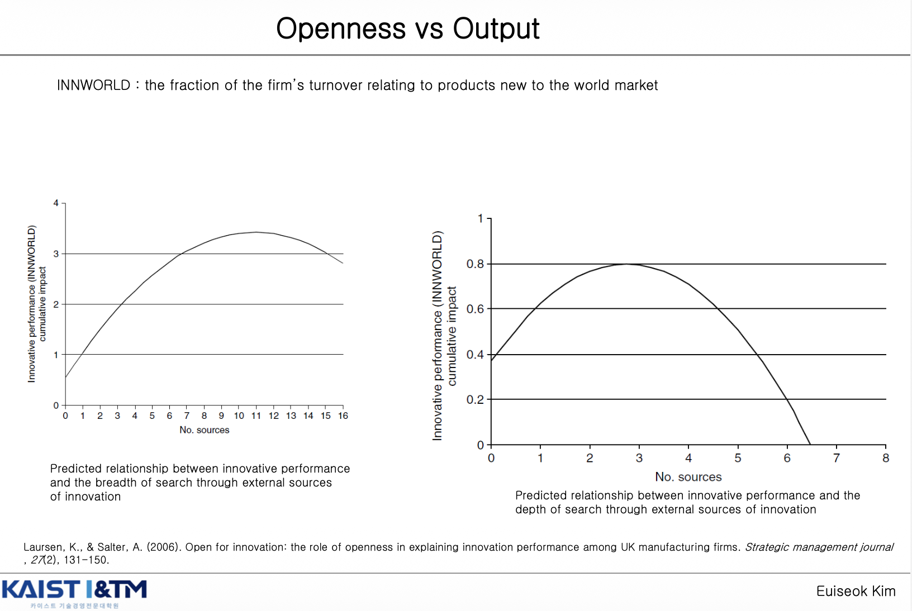
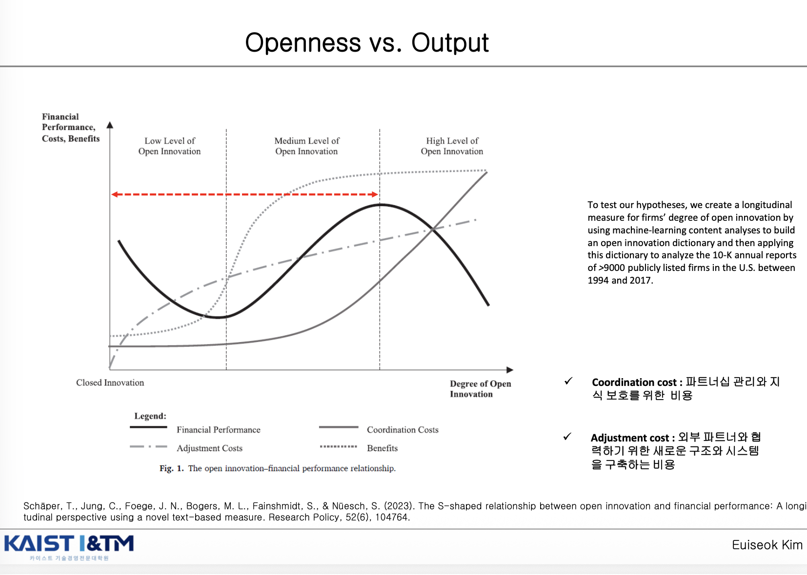
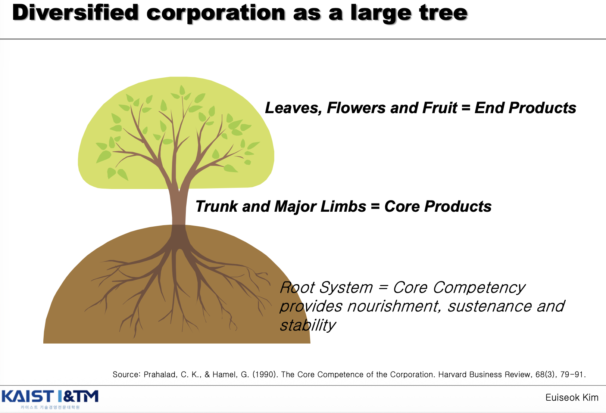
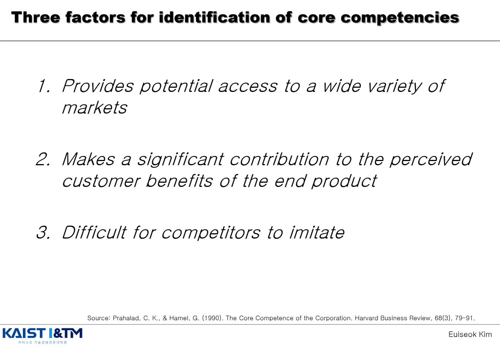
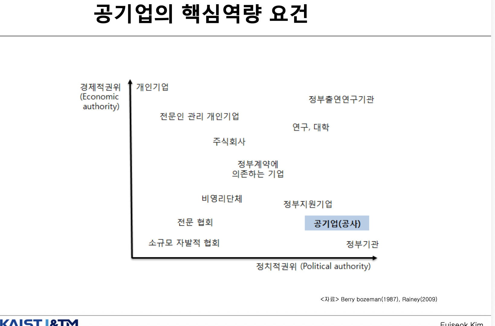
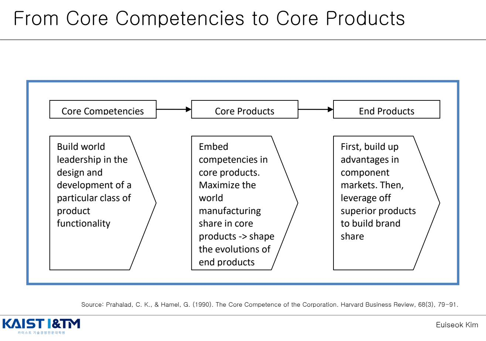
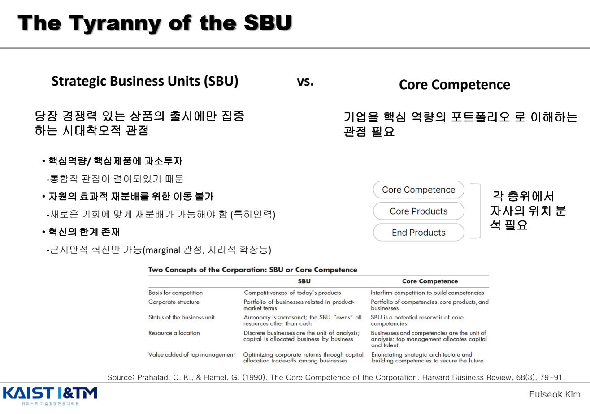

Open Innovation & Core Competence · 개방형 혁신과 핵심역량
이번 챕터는 1990~2000년대 혁신 연구의 두 거장을 다룬다. Chesbrough의 Open Innovation은 "혁신은 더 이상 회사 안에서만 일어나지 않는다"는 패러다임을, Prahalad & Hamel의 Core Competence는 "회사를 사업 단위가 아니라 핵심 역량의 포트폴리오로 봐야 한다"는 관점을 제시한다. 얼핏 정반대처럼 보이지만 — 개방과 핵심에 집중 — 사실 둘은 보완적이다. 어떤 역량을 안에 두고 어떤 부분을 밖에서 가져올지 결정하기 위해서는 핵심역량이 먼저 정의되어야 하기 때문이다.
학습 개요
- Chesbrough의 Open Innovation 정의와 등장 배경
- 폐쇄형 혁신 vs 개방형 혁신의 6가지 기본 원리와 주요 특징 비교
- Inbound vs Outbound Open Innovation + P&G의 Connect & Develop 사례
- 개방성과 혁신 성과의 관계: Laursen & Salter의 곡선
- Prahalad & Hamel의 핵심역량 정의와 3가지 식별 조건
- SBU의 한계(The Tyranny of the SBU)와 핵심역량 관점의 필요성
- Core Competencies → Core Products → End Products의 3계층 구조
1. Open Innovation의 정의 EXAM
Henry Chesbrough가 2003년 Open Innovation: The New Imperative for Creating and Profiting from Technology에서 처음 정립한 개념. 이후 Open Innovation: Researching a New Paradigm(2006)에서 다음과 같이 정식화되었다.

"Open innovation is the use of purposive inflows and outflows of knowledge to accelerate internal innovation, and expand the markets for external use of innovation, respectively."
즉, 연구·개발·상업화에 이르는 일련의 기술혁신 과정에서 기업 내부와 외부 사이에 일어나는 모든 형태의 지식 교류 활동이 개방형 혁신에 포함된다.
핵심 키워드
- Purposive (의도적): 우연한 교류가 아니라 전략적으로 설계된 흐름
- Inflows + Outflows: 양방향 — 외부 지식을 가져오기도 하고, 내부 지식을 외부로 내보내기도 함
- 두 가지 목적: ① 내부 혁신 가속화 + ② 미사용 혁신의 외부 시장 확장
2. 폐쇄형 혁신 vs 개방형 혁신의 비교 EXAM
Chesbrough(2006a)는 두 혁신 패러다임을 6가지 기본 원리에서 정면으로 대비시킨다. 이 표는 시험에서 가장 자주 인출되는 부분이다.

2.1 6가지 기본 원리
| 구분 | 폐쇄형 혁신 | 개방형 혁신 |
|---|---|---|
| 인재 | "우리 분야의 똑똑한 사람은 모두 우리 회사에서 일한다" | 똑똑한 사람이 모두 우리 회사에 있는 것은 아니다 → 외부 우수 인력과도 협업 필요 |
| R&D 가치 창출 | "수익을 얻으려면 발명·개발·판매를 우리가 모두 담당" | 외부 R&D도 중요한 가치 창출. 내부 R&D는 그 가치의 일부를 전유하기 위해 필요 |
| 발명-시장 진입 | "우리가 발명했으면 시장 진입도 우리가" | "수익을 얻기 위해 그것을 꼭 우리가 연구해야만 하는 것은 아니다" |
| 승리 조건 | 혁신을 시장에 처음 도입하는 회사가 승리 | 시장에 먼저 진출하는 것보다 더 좋은 비즈니스 모델을 구축하는 것이 더 중요 |
| 아이디어 활용 | "우리가 산업 내 최선의 아이디어를 창출하면 우리가 이긴다" | "내부와 외부 아이디어를 가장 잘 활용하면 우리가 이긴다" |
| 지식재산권 | IP를 직접 관리해 경쟁자가 우리 아이디어로 수익 못 얻게 차단 | 우리 IP를 타사가 활용하는 것에서 수익을 얻고, 타인의 IP를 구매해 BM 발전 |
2.2 주요 특징 비교
| 폐쇄형 | 개방형 | |
|---|---|---|
| 주요 산업 | 핵발전, 메인프레임 컴퓨터 | PC, 영화 |
| 아이디어 원천 | 대부분 내부 아이디어 | 많은 외부 아이디어 사용 |
| 인력 유동성 | 낮음 | 높음 |
| 벤처캐피탈 | 적음 | 풍부함 |
| 창업기업 | 소수의 취약한 창업 기업 | 많은 창업 기업 |
| 대학의 역할 | 중요성 미미 | 중요성 증대 |
2.3 왜 개방형으로 변화했는가
Chesbrough가 든 환경 변화 요인:
- 지식 노동자의 이동성 증가 — 회사 간 인력 이동으로 지식이 자연스럽게 흐름
- 벤처캐피탈 시장의 성장 — 우수한 아이디어를 외부에서도 사업화할 수 있는 길
- 대학·연구소의 역량 강화 — 외부 R&D 풀의 확대
- 제품 라이프사이클의 단축 — 모든 것을 내부에서 개발할 시간 부족
잘못된 이해 주의
"개방형 혁신 = 그냥 외주 주는 것"이 아니다. 개방형 혁신은 "의도적이고 전략적인 지식 흐름의 설계"다. 여전히 내부 R&D는 필수적이다(외부 가치를 흡수·전유하기 위해서 → IM09의 흡수역량 개념과 연결).
3. Open Innovation 사례 - P&G의 Connect & Develop (C&D)
Procter & Gamble의 Connect & Develop 프로그램은 개방형 혁신의 가장 대표적 사례다. "Research & Develop"이 아니라 "Connect & Develop" — 외부 자원을 연결해 개발한다는 의미다.

두 가지 방향 - Inbound & Outbound
| 유형 | 정의 | 구체적 활동 |
|---|---|---|
| Inbound Open Innovation (IOI · 내향적) | 외부의 자원을 획득하거나 외부의 역량을 이용하여 내부에서 R&D, 기술, 제품 등을 개발하고 상업화 | licensing-in, outsourcing-in, partnership, networking |
| Outbound Open Innovation (OOI · 외향적) | 내부의 자원을 외부로 방출(spin-off)하거나 내부 역량을 외부 기업에 제공하여, 외부 기업이 R&D, 기술, 제품 등을 개발하고 상업화 | licensing-out, spin-off, outsourcing, partnership, networking |
P&G의 4가지 개방형 로드맵 사례
- R&D 기반 IOI: CarpetFlick (외부 R&D 활용)
- 기술 기반 IOI: OLAY Regenerist (외부 기술 도입)
- 제품 기반 IOI: Febreze Candle (외부 제품 라이선스)
- R&D 기반 OOI: Glad (자사 기술의 외부 라이선싱)
- 기술 기반 OOI: Tropicana
4. Openness vs Output — 얼마나 개방해야 하는가
Laursen & Salter(2006)의 Strategic Management Journal 논문은 개방성과 혁신 성과의 관계를 실증 분석했다. 결과는 역U자 관계다.

이 그림의 뜻은 단순하다. 너무 닫혀 있어도 문제지만, 너무 열려 있어도 문제라는 것이다. 외부 지식을 적절히 활용하는 구간에서는 성과가 높아지지만, 일정 수준을 넘어서면 조정·통합 비용이 커지면서 오히려 성과가 떨어질 수 있다.
핵심 발견
- 개방성이 너무 낮으면: 외부 지식 활용 부족 → 성과 낮음
- 개방성이 너무 높으면: 관리·통합 비용 폭증, 핵심 역량 분산 → 성과 하락
- 중간 어딘가에 최적 개방성 지점이 존재 → 산업·기업 특성에 따라 다름
Schäper et al.(2023)은 더 나아가 개방형 혁신과 재무 성과 사이에 S자 형태의 관계를 발견했다. 어느 시점부터는 개방의 효과가 줄어들지만, 더 높은 수준에 가면 다시 효과가 나타나는 비선형성을 보인다.

즉 개방의 효과는 항상 일정하게 증가하거나 감소하지 않는다. 어떤 구간에서는 한계효과가 줄어들다가도, 더 높은 수준의 개방성과 이를 감당할 조직 역량이 갖춰지면 성과가 다시 개선될 수 있음을 보여준다.
5. 핵심역량 (Core Competence) — Prahalad & Hamel (1990) EXAM
C.K. Prahalad와 Gary Hamel이 Harvard Business Review(1990)에 발표한 The Core Competence of the Corporation은 경영학에서 가장 영향력 있는 논문 중 하나다.
5.1 핵심역량의 정의

핵심역량(Core Competence)이란 과거에 그 기업을 이끌어 왔으며, 또한 적절하게 전환되거나 추가의 역량을 축적시키면서 미래 성장의 견인차 역할을 할 수 있는, 기업 내부에 공유되고 있는 기업 특유의 총체적인 능력, 기술, 지식을 의미한다.
즉, "특정 기술이나 제품이 아니라, 그 위에서 작동하는 조직의 통합·조정 능력"이다.
5.2 핵심역량 식별의 3가지 조건

- Provides potential access to a wide variety of markets (시장 확장성)
- 특정 한 시장에만 쓰이는 능력이 아니라, 여러 시장으로 확장 가능해야 함
- Makes a significant contribution to the perceived customer benefits of the end product (고객 가치 기여)
- 최종 제품의 고객이 인지하는 가치에 의미 있는 기여를 해야 함
- Difficult for competitors to imitate (모방의 어려움)
- 경쟁자가 쉽게 따라할 수 없어야 함 — 모방이 쉬우면 경쟁우위가 사라짐
민간기업 핵심역량의 기본 기준
확장력(Extendibility), 고객가치(Customer value), 차별화(Competitor differentiation). 즉 여러 시장으로 뻗어갈 수 있고, 고객가치에 기여하며, 경쟁자가 쉽게 모방할 수 없어야 한다.
5.3 공기업의 핵심역량 요건
다만 공기업은 일반 기업보다 훨씬 강한 공공성(publicness)을 추구해야 하는 조직이다. 따라서 기업 성장과 경쟁우위를 위한 일반적 핵심역량 조건만으로는 충분하지 않고, 공공성 중심의 추가 요건이 함께 충족되어야 한다.

공기업의 핵심역량은 시장 확장성·고객가치·차별화라는 일반 조건 위에, 목표의 공공성, 확장의 공공성, 효과의 공공성을 추가로 갖추어야 한다.
| 구분 | 의미 | 왜 중요한가 |
|---|---|---|
| 1. 목표의 공공성 (Goal publicness) |
공기업의 핵심역량은 정부로부터 부여된 설립목적을 달성하고, 법률로 위임받은 정부기능을 효율적으로 수행하기 위한 공공적 수요를 충족해야 함 | "잘하는 능력"이더라도 설립 목적과 무관하면 공기업의 핵심역량으로 보기 어려움 |
| 2. 확장의 공공성 (Expansion publicness) |
핵심역량을 바탕으로 확장되는 사업·제품·서비스 역시 공공적 성격을 유지해야 함 | 새로운 사업으로 넓혀 가더라도 공공기관으로서의 정체성과 역할이 흐려지면 안 됨 |
| 3. 효과의 공공성 (Effect publicness) |
핵심역량은 해당 공기업의 기업가치뿐 아니라 지역경제·국가경제에 대한 기여까지 고려하는 사회경제적 적합성을 가져야 함 | 성과 판단 기준이 수익만이 아니라 공공 편익과 사회적 파급효과까지 포함되기 때문 |
한눈에 정리
민간기업이 "경쟁우위를 만들 수 있는가"를 먼저 묻는다면, 공기업은 여기에 더해 "설립 목적에 부합하는가", "확장 이후에도 공공성을 유지하는가", "그 효과가 사회 전체에 기여하는가"를 함께 물어야 한다.
5.4 Core Competencies → Core Products → End Products 3계층

| 층위 | 해야 할 일 |
|---|---|
| Core Competencies (핵심역량) | 특정 제품 기능의 설계·개발에서 세계적 리더십을 구축 |
| Core Products (핵심제품) | 역량을 핵심제품에 내장(embed). 세계 제조 점유율을 최대화하여 최종제품의 진화 방향을 형성 |
| End Products (최종제품) | 먼저 부품(component) 시장에서 우위를 구축 → 그 우위를 활용해 브랜드 점유율 확장 |
고전적 예시: 혼다의 엔진 기술 (핵심역량) → 자동차·오토바이·잔디깎이·발전기 등 다양한 엔진 기반 제품(핵심제품) → 시장에서의 최종 제품들. 한 가지 역량을 여러 시장으로 확장하는 모습이 보인다.
"The diversified corporation is a large tree... The root system that provides nourishment, sustenance, and stability is the core competence."
- 뿌리(Roots) = 핵심역량
- 줄기와 큰 가지(Trunk & Major Limbs) = 핵심제품
- 잎·꽃·열매(Leaves, Flowers, Fruit) = 최종제품
잎(최종제품)만 보면 그 나무가 어떤 나무인지 알 수 없다. 뿌리(핵심역량)를 봐야 한다.
6. The Tyranny of the SBU (사업 단위의 폭정)
Prahalad & Hamel의 핵심 비판 대상은 1980년대까지 지배적이었던 SBU(Strategic Business Unit) 중심 경영이다. SBU 관점은 "당장 경쟁력 있는 상품의 출시에만 집중하는 시대착오적 관점"이라고 봤다.

SBU 관점의 3가지 한계
- 핵심역량·핵심제품에 과소투자 — 통합적 관점이 결여되었기 때문
- 자원의 효과적 재분배 불가 — 새로운 기회에 맞게 재분배가 가능해야 하지만 SBU별 사일로가 막음 (특히 인력)
- 혁신의 한계 존재 — 근시안적 혁신만 가능 (marginal 관점, 지리적 확장 등)
| SBU 관점 | Core Competence 관점 | |
|---|---|---|
| 경쟁의 기반 | 오늘의 제품 경쟁력 | 역량 구축의 기업 간 경쟁 |
| 기업 구조 | 제품-시장 단위 사업의 포트폴리오 | 역량·핵심제품·사업의 포트폴리오 |
| 사업 단위의 지위 | 자율성이 신성불가침. SBU가 현금 외 모든 자원을 "소유" | SBU는 핵심역량의 잠재적 저장고(reservoir) |
| 자원 배분 | 개별 사업이 분석 단위. 자본을 사업별로 분배 | 사업과 역량이 분석 단위. 최고 경영진이 자본과 인재를 분배 |
| 최고경영진의 부가가치 | 사업 간 자본 배분의 trade-off로 수익 최적화 | 미래 보장을 위한 전략적 아키텍처 표현과 역량 구축 |
핵심 메시지
기업을 "사업단위의 모음(SBU portfolio)"이 아니라 "핵심역량의 포트폴리오(portfolio of competencies)"로 이해해야 한다. 그래야 다각화의 근간이 마련되고, 사업구조를 효과적으로 재구성할 수 있다.
예상 문제 매칭
📌 Open Innovation 정의와 폐쇄형 vs 개방형 비교 (예상문제집 21번)
"Chesbrough의 Open Innovation을 정의하고, 폐쇄형 혁신과 개방형 혁신의 차이를 기본 원리 측면에서 비교 설명하시오."
답안 핵심:
- 정의: 의도적인 inflows/outflows of knowledge를 통해 (1) 내부 혁신을 가속화하고 (2) 외부 시장을 확장
- 6가지 기본 원리 대비표를 인출 (인재 / R&D 가치 / 시장 진입 / 승리 조건 / 아이디어 활용 / IP 전략)
- 주요 산업의 차이 (핵발전·메인프레임 vs PC·영화)
- 왜 개방형으로 전환되었는가: 인력 이동, VC 시장, 대학 역량, 라이프사이클 단축
📌 Inbound vs Outbound 개방형 혁신
"내향적 개방형 혁신(IOI)과 외향적 개방형 혁신(OOI)의 차이를 P&G 사례를 들어 설명하시오."
답안 핵심: IOI = 외부 자원 흡수해 내부 개발 (licensing-in, partnership) / OOI = 내부 자원 외부 방출 (spin-off, licensing-out). P&G C&D 프로그램의 4가지 사례.
📌 Prahalad & Hamel의 핵심역량 (빈출)
"핵심역량(Core Competence)을 정의하고, 핵심역량 식별의 3가지 조건을 설명하시오. 또한 Core Competencies → Core Products → End Products의 3계층 관계를 사례와 함께 서술하시오."
답안 핵심:
- 정의: 조직의 집단적 학습(collective learning) — 기술 조정 능력, 기술 흐름 통합 능력
- 식별 3조건: 시장 확장성 / 고객 가치 기여 / 모방의 어려움
- 3계층: 핵심역량(뿌리) → 핵심제품(줄기) → 최종제품(잎·열매)
- 사례: 혼다의 엔진 기술 → 자동차·오토바이·잔디깎이·발전기
📌 The Tyranny of the SBU
"SBU 중심 경영의 한계를 설명하고, 핵심역량 관점이 이를 어떻게 극복하는지 서술하시오."
답안 핵심: SBU 한계 3가지(과소투자 / 자원 재분배 불가 / 근시안적 혁신) → 기업을 역량의 포트폴리오로 재정의 → 전략적 아키텍처와 역량 구축의 중요성.
📌 통합 사고 — Open과 Core의 관계
"개방형 혁신과 핵심역량 관점은 모순되는가, 보완되는가? 두 관점을 통합하여 설명하시오."
답안 핵심: 보완적. "무엇이 우리 핵심역량인가"가 정의되어야 "어떤 부분을 외부에서 가져오고 어떤 부분을 내부에 둘 것인가"를 결정할 수 있다. 핵심역량은 안에서 키우고, 그 외 자원은 개방형으로 조달.
※ 이 페이지의 모든 그림은 강의자료 IM06_Open_Core.pdf에서 발췌한 것이며, 학습 목적으로만 사용된다.